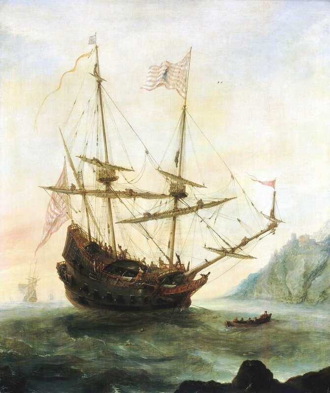
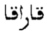

Caracca (1157-1848)
О каракках мы писали очень много: 22 поста, как можно видеть, отмечены этим тегом. Знатоки картежного ремесла наверняка сказали бы, что это перебор. Но не будем следовать их логике. Подавляющее большинство этих постов было посвящено кораблям XV века, и лишь несколько слов было сказано о каракках XIV века. А сейчас мы видим дату появления каракки на генуэзских верфях, относящуюся к середине двенадцатого века. Сможем ли мы заполнить конкретной информацией о каракках эту брешь размером в два века?
Каракке очень не повезло в русскоязычной литературе. То ли неблагозвучное название тому виной, то ли другие какие причины, но даже в таких солидных источиках, как словарь Даля и четырехтомник Фасмера, каракке не нашлось места. Воды в рот набрали и Брокгауз с Ефроном. Молчит о каракках, вы не поверите, и Большая Советская Энциклопедия, представленная всеми тремя ее изданиями. И это при том, что некоторые исследователи считали, что флагманский корабль первооткрывателя Америки Колумба являлся караккой (не будем сейчас вдаваться в критический анализ этого утверждения).

«Санта Мария» на якоре» Андриес ван Эртвельт, 1628. Национальный Морской музей, Гринвич. Здесь корабль Колумба показан как каракка.
Несправедливо.
Современный продвинутый пользователь Интернета конечно же в первую очередь обратится не к Далю и Фасмеру, а к Википедии. И будет разочарован, прочитав в русской версии такую фразу:
Каракки впервые появились в XIV веке в Португалии и предназначались для океанских плаваний в Атлантическом океане. Позже распространились в Испании, Венеции, а затем в Англии, Франции и Турции
Причем к этому утверждению приводится ссылка на Морской энциклопедический словарь. Но там написано нечто другое. Вот относящийся к этому пассаж:
КАРАККА (фр. caraque), большое парус. судно, распространенное в XIII—XVI вв сначала в Португалии и Венеции, а затем в Англии, Франции н Турции, применявшееся для воен. и торг. целей К. имела до 4 палуб, развитые надстройки в носу н корме, 3—5 мачт. Обшивка К. выполнялась вгладь, борта были закруглены н немного загибались внутрь, что объяснялось не только констр., но и воен. соображениями; такие борта до нек-рой степени затрудняли абордаж.
Дмитриев В.В. Морской энциклопедический словарь, «Судостроение», 1991. Т.2
Значит, уже не в XIV, а в XIII веке. Хотя также родиной каракки называется Португалия.
Мы, как много раз уже демонстрировали, не верим на слово, каким бы авторитетным автором оно ни произносилось, поэтому приведем несколько свидетельств, которые не стыкуются с вышеупомянутыми источниками.
Начнем с больших знатоков морской терминологии Средиземноморья, авторов книги «The lingua franca in the Levant: Turkish nautical terms of Italian and Greek origin» Henry Romanos Kahane, Renée Kahane и Andreas Tietze:
This designation of a ship, based on Arab, harrâqa 'fire ship', appears in Genoa in the 12th c, and is widely spread in the Mediterranean, where it is typically a Genoese or Spanish-Portuguese ship. Whether the Arabic word spreads from Sicily, from Genoa, or from the West, needs further clarification
Название корабля, произошедшее от арабского «огненосного судна» harrâqa (харрака), появляется в Генуе в 12 веке, и получает широкое распространение на Средиземном море, где он является типичным генуэзским или испано-португальским кораблем. Вопрос же о том, получил ли это арабский термин расрпостранение из Сицилии, Генуи или из Западной Европы, требует дальнейшего прояснения.
p.147-148
Эту точку зрения поддерживают и многие лингвистические тяжеловесы.
Авторитетный этимологический словарь галло-романских языков (помимо французского - валлонский, окситанский, франкопровансальский языки) Französisches Etymologisches Wörterbuch (FEW) швейцарского филолога Walther von Wartburg’а, издание которого (на немецком языке) началось в 1922 и полностью закончилось в 2002 году, является для нас в подавляющем большинстве случаев эталоном при исследовании происхождения слов французского языка. Французский термин caraque для каракки лишь слегка отличается от итальянского caracca, от которого он произошел. Поэтому можно считать, что свидетельство FEW имеет универсальный характер. Приведем его анализ.
Прежде всего отметим, что в FEW нет отдельной статьи caraque, сведения о каракке приведены в статье ḥarrāqa (ar.): brander, kleines boot. (харрака (арабск.), брандер, маленькое судно), в разделе «ориентализмы» (Orientalia, t.19). Считается, что от этого арабского слова произошли два французских: 1. старофранцузское caraque и 2. французское нового времени caracore. Второе значение относится к гребному судну района Молуккских островов, и им мы сейчас заниматься не будем. Что касается первого значения, то во французском языке это слово впервые отмечается в 1245 году: caraque „petit bateau des Sarrazins" – «маленькое судно сарацинов», поэтому арабское происхождение термина напрашивается само собой. FEW считает, что у арабов харрака появилась впервые в Басре как брандер, и делает вывод, что непосредственно у них слово заимствовали итальянцы, термин впервые появляется в Генуе в 1157 году. (tritt zuerst in Italien auf, wo mlt. carraca in Genua schon 1157 bezeugt ist.) Затем слово восприняли французы, от которых его заимствовали другие европейские языки.
Но не все ученые разделяли эту точку зрения.
Так, известный голландский встоковед Рейнхарт Дози (1820-1883) в своем исследовании (совместно с Энгельманом) «Glossaire des mots espagnoles et portugais, dérivés de l’arabe» (Словарь испанских и португальских слов арабского происхождения, Лейден, 1869) полагает, что вряд ли харрака может быть первоосновой для каракки, так как последняя – это крупный корабль большой грузоподъемности, а не легкое судно, к которым он относит харраку. Действительно, в дельте Нила арабы использовали харраки как мелкие вспомогательные суда, обеспечивавшие деятельность крупных военных парусных и гребных кораблей.
Точку зрения Дози поддерживает испанский каталонский лингвист Жоан Короминес (1905—1997; иногда его имя на русском пишут как Жуан Куруминас-и-Виньо). В первом томе его «Полного этимологического словаря каталанского языка» ( Diccionari etimològic i complementari de la llengua catalana) содержится предположение, что термин каракка произошел от арабского qarāqir, множественного числа от qurqūra – купеческое судно (если пожелает аллах, мы в дальнейшем подробно расскажем об этих кораблях). То, что в качестве первоосновы использовано множественное число, Короминес объясняет так: куркуры обычно действуют группами и для их обозначения арабы использовали множественное число термина, европейцы же восприняли это как название типа корабля. Конечно, эта гипотеза уступает по своей убедительности варианту с харракой, но полностью исключать ее влияние на формирование термина каракка не стоит.
Подобную точку зрения разделяет и наш востоковед Т.А. Шумовский. В своей книге «Арабы и море» он пишет
Среди судов Средиземного моря куркура представляла очень часто трехпалубный транспорт для перевозки грузов. Термин куркура, восходящий через сирийскую форму к греческой κερκοῦρος, латинской cercurus, употреблялся арабскими моряками и поэтами еще до ислама, а в средние века перешел из арабского в языки Южной Европы, приняв на романской почве формы caraca, carraca, caraque, caracora, a в Турции — форму каракэ.
с.171-172
Уточним: в турецких документах 16 века (а именно тогда впервые в них встречается упоминание о каракках), использовалась арабская письменность и термин этот выглядел как 
(karaka).
Шумовский знает и о существовании такого типа арабских кораблей как харрака, но вот какую роль он отводит им в истории названия кораблей.
Из нильских судов интересно выделить тип харрака. В XIV веке так называли судно «для прогулок царей и эмиров по случаю их дел и нужд», как выражается один арабский историк, и в этом значении харрака, перейдя в испанское haloque, образовало путем лабиализации начального придыхания форму faluca (итальянское felucca), каковая в виде ту¬рецкого фалукэ (русское фелюга) вернулась в арабский язык. Однако турки вкладывали в слово фалукэ понятие «брандера», и это напоминает нам о том, что в соответствии со своим буквальным значением «зажигающее» харрака первоначально понималось как судно, с которого морские «борцы за веру» метали горящую нефть в неприятельские корабли.
с.172
Т.е. от харраки произошли фелюки, а не каракки. Неисповедимы пути твои, господи.
Мы ранее подробно писали об арабских харраках, поэтому не будем здесь повторяться.
Хочется привести мнение еще одного авторитетного языковеда. B. E. Vidos в работе Storia delle parole marinaresche italiane passate in francese: contributo storico-linguistico all' espansione della lingua nautica italiana (1939) предполагает, что
gli storiografi della marina italiana, spaglinola e portoghese sono unanimi nell'attestare che le caracche erano navi genovesi, anche nella marina spagnuola e portoghese.
…историки итальянского, испанского и португальского флотов единодушны во мнении, что каракки были генуэзскими кораблями, даже если они находились в составе испанского или португальского флота.
стр.7
К сожалению, последняя мысль получила недостаточное распространение и было бы неплохо подкрепить ее в дальнейшем конкретными фактами для большей убедительности.
Проследив лингвистический след, который оставила каракка в истории, в следующий раз поговорим о конструктивных особенностях этого корабля, который сходил со стапелей Лигурии на протяжении семи веков.